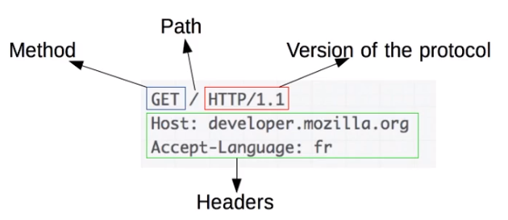

在这之前
Roy Thomas Fielding 与 HTTP/1.1
- 参与制订 HTTP/1.0 规范（1996.5）
- 参与制订 URI 规范（1998.8）
- 主导制订 HTTP/1.1 规范（1999.6）
- 2000 年发布指导 HTTP/1.1 规范制订的论文
- 《Architectural Styles and the Design of Network-based Software Architectures》（架构风格与基于网络的软件架构设计），即 Representational State Transfer（REST）架构。
- Apache 基金会（The Apache Software Foundation）共同创始人。
- 参与开发 Apache httpd 服务。
Form Follows Function
- HTTP 协议
- Roy Thomas Fielding：HTTP 主要作者，REST 架构作者。
- URI：统一资源标识符

HTTP 解决了什么问题
解决 WWW 信息交互必须面对的需求：
低门槛
- 例子：java applet 门槛过高
可扩展性：巨大的用户群体，超长的寿命
分布式系统下的 Hypermedia：大粒度数据的网络传输
Internet 规模
- 无法控制的 scalability
- 不可预测的负载、非法格式的数据、恶意消息
- 客户端不能保证所有服务器信息，服务器不能保持多个请求间的状态信息。
- 独立的组件部署：新老组件并存
- 无法控制的 scalability
向前兼容：自 1993 年起 HTTP0.9\1.0（1996）已经被广泛使用。